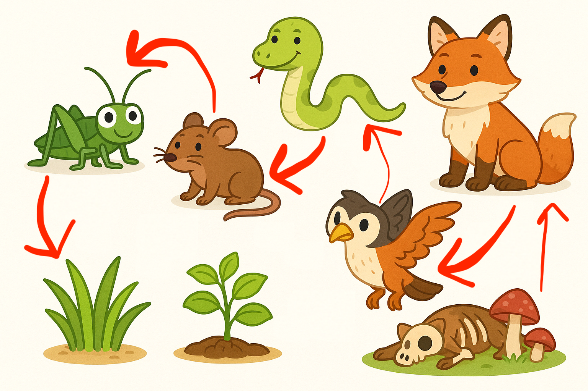

🐌 Juego: Arma tu propia cadena trófica
Arrastra y ordena las tarjetas para construir una cadena desde el sol hasta un descomponedor.


Es una secuencia ordenada que muestra “quién se come a quién” dentro de un ecosistema. A cada paso, la energía pasa de un ser vivo a otro.
En la realidad, los seres vivos no comen una sola cosa. Por eso, las cadenas se entrelazan formando redes tróficas. Las redes muestran relaciones más complejas. Si desaparece una especie, otras también pueden verse afectadas.
Haz clic en un animal para ver qué come y quién se lo come.
(Próximamente interactivo)
Observa cómo la energía fluye desde el productor hasta los consumidores y descomponedores.
(Próximamente animación)
Arrastra y ordena las tarjetas para construir una cadena desde el sol hasta un descomponedor.